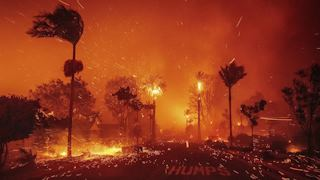

TeamSpeak обновился. Теперь в нём есть демонстрация экрана в 60 FPS и современный интерфейс в стиле Discord.
Что внутри:
➖Полностью обновлённый дизайн;
➖Возможность демонстрировать экран в 1440p или 1080p/60 FPS;
➖Возможность включать камеру;
➖Поддержка мультистриминга;
➖Улучшенное качество звука.
Из этого работает только чат с лютыми задержками через сервера TeamSpeak. Просмотр 2х демок грузит проц на 100%. Демонстранция своего экрана так же грузит проц на максимум. Стоимость сервера с демками 80 рублей за 1 слот в месяц. После тестов задержки ТС и ДС оказалось, что задержка одинаковая. Защитники ТС замолчали.
«Я просто хочу поблагодарить вас за то, что вы сделали это возможным. Спасибо», — сказал Маск. Он прижал правую руку к груди, а затем резко поднял ее вверх по диагонали, ладонью вниз, пальцы вместе: «Мое сердце с вами». Затем он развернулся и еще раз повторил этот жест.


Лесной пожар пылает в Лос-Анджелесе со вторника. Огонь охватил прибрежную зону между пляжами Санта-Моника и Малибу и быстро распространился вглубь престижного района Пасифик-Палисейдс, где проживают голливудские звезды. Сейчас на этом месте — руины.
Test gif
Родственники Ивани не хотят отпускать его в мск с мыслями, что его там заберут укр спец службы и аструм это вражеская компания.
На официальной вики странице по Warface спалили характеристики некоторых старых апнутых пушек весеннего сезона. 3 недели после нового года характеристики висели в таблицах и никто не заметил.